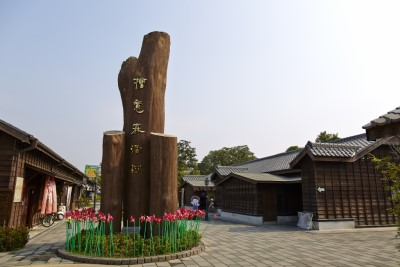

| 探尋古蹟之美 | |
| 嘉義舊監之營建，主要人力來自於受刑人，是日據時期監獄營建之特色，也是其它公共建設所沒有的。據昭和十三年《臺灣刑務月報－嘉義支所特輯號》，說明受刑人參與營建工作的項目及其工作的辛勞。營建初期約有三年寒暑不分晴雨，是由（使役）受刑人施工建造，燒磚瓦、墳墓的挖掘、敷地整理、外牆構築、舍房、廳舍、倉庫等的建築，舊監於大正十一年三月竣工。 | |
| 義起來嘉 | |
| 入口意象是以三根阿里山紅檜原木高聳矗立之造型，作為迎賓「年輪廣場」，該紅檜為自阿里山之同一棵風倒木運下後矗立在此，象徵著「森」林生命力及阿里山神木意象，廣場上有一約600年的原木橫切面年輪，呈現樹木成長之生命週期，延續林業發展並展現生生不息的力量。 |  |
| 貼近廟宇文化，探索新的人生 | |
| 城隍又稱城隍爺，象徵地方之守護神，城隍廟是嘉義市民的信仰中心，自古即與民眾息息相連，香火鼎盛。嘉義城隍廟於康熙54年（1715）由諸羅知縣周鍾瑄發起捐俸創建，歷代經多次重建，現今的城隍廟係於昭和15年（1940）重建竣工，於2015年升格為國定古蹟。 光緒元年（1875），皇帝敕封嘉義城隍神封號曰「綏靖」，亦即加封縣級「顯佑伯」城隍成為州級「綏靖侯」，是臺灣各縣級城隍，唯一加尊號的神祇。 |
|